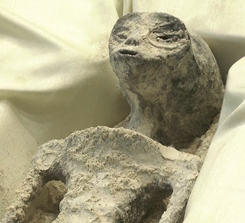
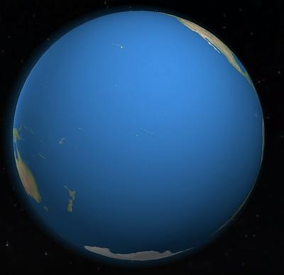
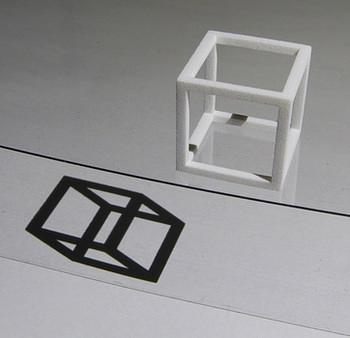

There are a few things going on with the UFO story that dates back to at least 2017.
The story has gone from "UFOs are not real" to "The military is secretly studying them as a potential threat" to "Actually the Navy is routinely harassed by these things, here's video and radar data, no idea what they are, can't be human tech". To "Oh actually they had a few of these crashed objects but they are now being held onto by private companies and they are outside the legal ability of the U.S. government to disclose if they wanted to".
Here's a quick timeline of the big changes that lead to the current congressional battle to force "disclosure":
Deputy Secretary of Defense David L. Norquist forms the UAP Task Force (UAPTF)
2020-12-23
Trump vetos the NDAA (National Defense Authorization Act) over Confederate names on military bases, but that same bill would force the intelligence community to release a report on what they know about UAPs in 180 days. Congress overrides Trump's veto, the bill passes and becomes law.
2021-06-25
The Office of the Director of National Intelligence releases Preliminary Assessment: Unidentified Aerial Phenomena, which focused on 144 reports of UAP incidents by mostly Navy personnel. Of those, 80 involved multiple sensors (e.g. camera + radar). The report highlights this as a national security risk.
2022-05-17
Andre Carson leads the UAP Hearing in the U.S. House of Representatives.
2023-06-06
The Debrief publishes the David Grusch story where he says the U.S. has CRASHED SHIPS from non-human intelligences. Grusch is former Air Force, worked in Geospatial Intelligence and was on the UAP Task Force.
eminent domain over any and all recovered technologies of unknown origin (TUO) and biological evidence of non-human intelligence (NHI) that may be controlled by private persons or entities in the interests of the public good
2023-07-26
David Grusch testifies before congress, under oath, about the alleged UAP Crash Retrieval program. He uses the term "Non-Human Intelligence" intentionally, since he is not claiming they are extraterrestrial.
2023-11-28
Four republican congressmen are blocking the Schumer amendment that would give the U.S. government eminent domain over privately controlled "recovered technologies of unknown origin (TUO) and biological evidence of non-human intelligence (NHI)"
The thing that's happening right now is that Congressman Mike Turner is blocking the UAP Disclosure Act. Mike Turner is Representative of the 10th District of Ohio, where Wright-Patterson Air Force Base is. David Grusch points out that Lockheed Martin is one of Turner's biggest donors, and Grusch is claiming that Lockheed has some crashed UAP material in their possession. The Schumer amendment to the UAP Disclosure Act would give the U.S. government the legal ability to take those crashed UAP materials from Lockheed and disclose details to the public.
I know, this seems nuts, but if Grusch is lying, then he's risking jail time. He testified under oath, so his claims are higher signal than the average yokel saying the gubmint's hide'n the aliens.
So who cares? Just show us the aliens already, right!?

mexican-aliens.png275 KB No! Not like that! Seriously though, if what Grusch is claiming is true, then reality would have to be a lot weirder than most of us suspect. The reason has to do with what might explain the things people see in these UAP sightings. One of the common failure modes of dealing with these sighting experiences is that the craft themselves are assumed to be either (1) extraterrestrial or (2) probably nothing. So if they aren't extraterrestrial, then they are probably nothing. The logic is this:
ET or Nothing, they probably aren't ET, therefore Nothing.
But this line of reasoning doesn't exhaust all the possibilities, and each of them have different associated implications. Let's introduce a few:
Assuming some UAP are piloted by non-human intelligence, who are they?
This will be a speculative exercise, but the purpose of this exercise is to see which hypotheses could explain some of these UAP sightings, and then to figure out what would follow, if that hypothesis were true.
a terrestrial civilization from the past
humans from the future (Time Travelers)
extraterrestrials
interdimensional beings
demons
1. Terrestrials from the past
This one is least likely, in my opinion, because I would expect a lot more archaeological evidence. Although the 2004 Nimitz Incident (the tic tac) and others reported by the Navy show that these things can not only fly, but they can move underwater too. One speculative possibility is that a terrestrial civilization is under the Pacific ocean and we just haven't noticed. I mean, just look at it:

pacific.jpg26.8 KB
2. Humans from the future
This one explains a number of things about the popular drawings of grey aliens. First, greys look like humans: 👽! They are bipedal, have bodies that are mostly humanoid. That's an uncommon morphology on earth, so it would seem unlikely that ETs who evolved separately from earth would converge on the same morphology as us.
Also, there are a lot of abduction stories about cross-breeding experiments. If humans can breed with greys, that means they are human. Dr. Michael P. Masters is a biological anthropologist (and a gentleman) who developed this hypothesis in his book Identified Flying Objects. Maybe the UFOs are time machines visiting their past. But the UAP Disclosure Act specifically mentions "non-human intelligence", so assuming 2., we would have to conclude that they have evolved into a different species. This weeds out the inter-breeding stories, but then again, they were stories, and the abduction stories could be dreams, hallucinations or made up. Another possibility here is that we are visited by many of our descendants, the ones closer in time are the same species, and the ones very far into the future, like millions of years, have speciated after enough evolutionary time.
3. Extraterrestrials
This one is common in popular culture, but also pretty unlikely, given the unfathomable distances between planets and galaxies. Maybe ETs could engineer traversable wormholes, but then we would see the wormholes. We even know exactly what wormholes would look like, they were accurately rendered in the movie Interstellar. The humanoid shape of the grey aliens could be convergent evolution. In the evolution of human intelligence, the move from walking on all fours to walking on two legs had the effect of freeing up our hands for doing tool-building. Perhaps most intelligent life converges on this because of the importance of free limbs for tool-building.
4. Interdimensional beings
This one takes a bit of imagination, but it imagine you are a Flatlander, confined to a 2-dimensional plane:

cubeshadow.jpg43.5 KB You see the shadow of the cube, and it appears and then shape-shifts as the 3-dimensional cube rotates. It is apparently able to move very quickly in ways you can't explain. If there are more than 3 spatial dimensions, then it's possible that living beings are moving around us all the time but we don't see them because they aren't intersecting with our space, or projecting anything down into it.
This is one of those explanations that David Deutsch would say is a bad explanation, because it is easy to vary. You can vary the number of dimensions, the number of parallel universes, the laws of physics in other universes, and you can vary the kinds of things that might be in that higher-dimensional space in order to fit your observations. All of these variations are consistent with the crushing lack of observations of these other universes, assuming they exist. That said, it should be included, because serious physicists do consider a multiverse to be a real possibility.
5. Demons
In Catholic ontology, demons exist, and they like to fool and distract humans. Assuming this ontology, then that might explain some of these sightings. I don't have much to say about this possibility other than that it's something a small Christian faction of the U.S. military takes seriously. See: Christian Pentagon Officials Halted UFO Research Over Fear That Aliens Are Demons.
So for possibilities 1-5, there is also a non-exclusivity about them, that is, there might be ETs and time travelers, and demons, and also suboceanic mole people who share an evolutionary past with us but diverged long ago and only occasionally send up scouts to spy on us.
Pause for a moment and zoom out. All of these things should exist somewhere as a possibility in your mind, because it avoids the failure mode of thinking "if not ET, then Nothing".
It's natural to ask "why don't more scientists take this seriously?", but stigma around UFOs was something that was amplified by CIA psyops like the 1953 The Robertson Panel. The Robertson Panel made a concerted effort to engage astronomers, Disney, and other media companies to deliberately stigmatize UFOs. This was done to prevent the public from clogging emergency reporting systems with UFO sightings during the Cold War. But it's one prominent example that shows that the topic has been tainted by a manufactured stigma. If you know anything about how most academic science is conducted, there are very strict rules for what research gets funded, and academic scientists can spend about half of their time just writing up grant proposals. So academic scientists have mostly avoided the issue. The military though... they don't have to worry about funding (they get like a trillion dollars a year), and they enjoy a gratuitous amount of secrecy, which allows them to do things like study UFOs without having to convince taxpayers.
It's been weird seeing Congress and the Navy spend so much time on the UFO issue, but then again, maybe reality is weird.
“There are more things in heaven and earth, Horatio,/Than are dreamt of in your philosophy”